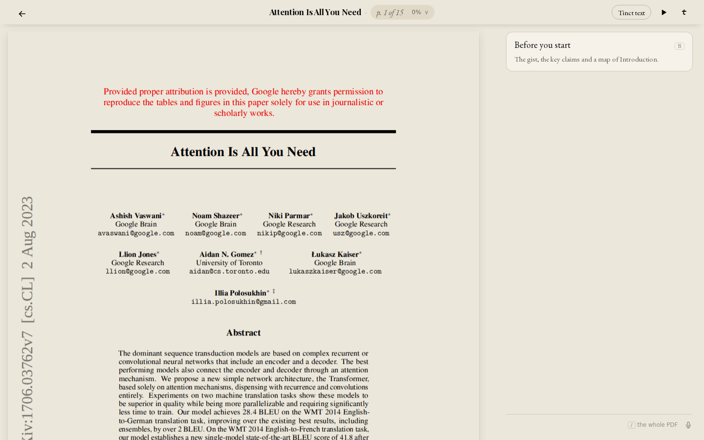
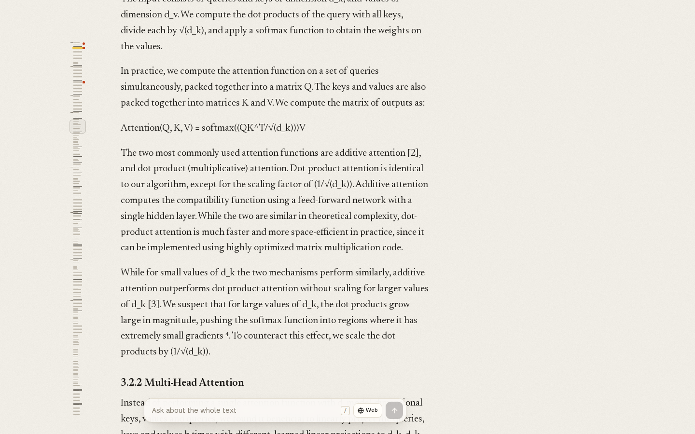
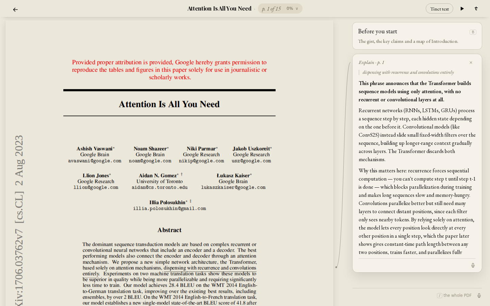
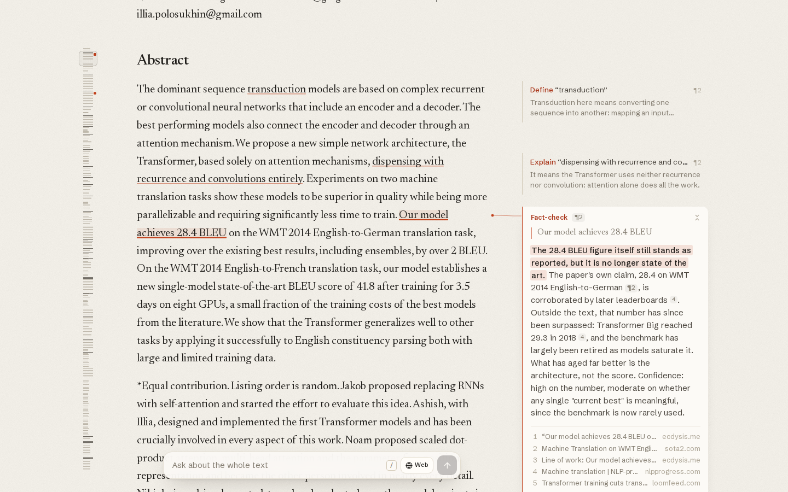
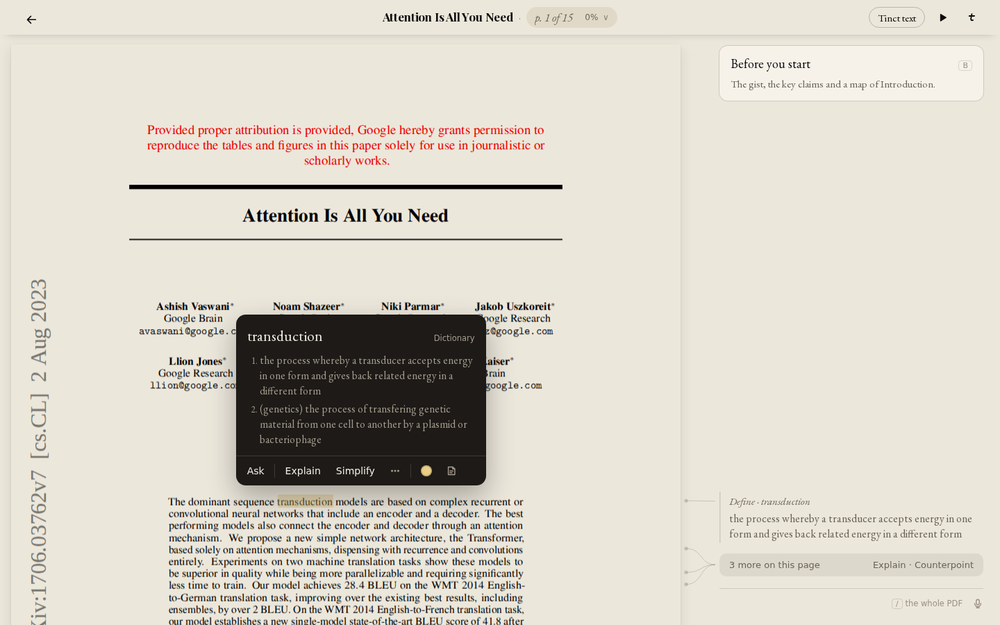
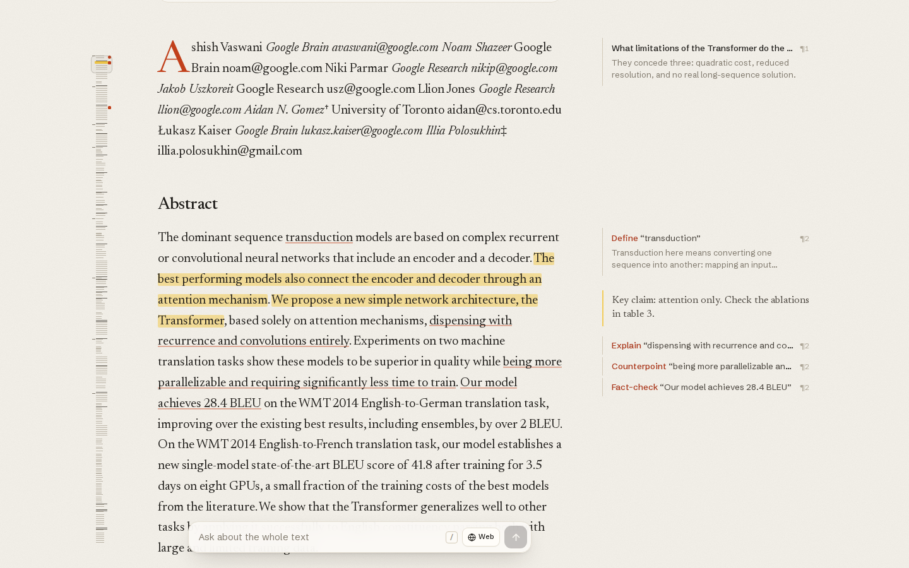
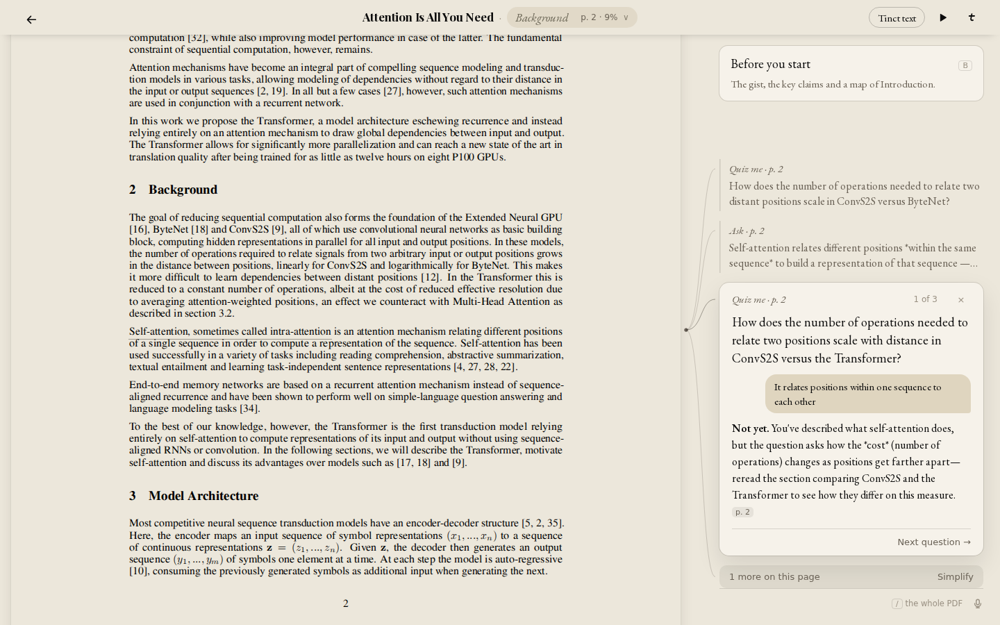
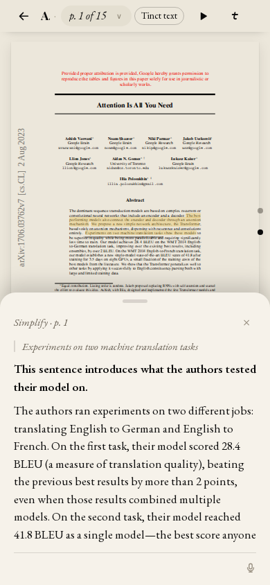

<title>Tinct vs Gloss PDF Test</title>
<meta name="claude:viewport-fit-sides" content="cover">
<link rel="preconnect" href="https://fonts.googleapis.com">
<link rel="preconnect" href="https://fonts.gstatic.com" crossorigin>
<link rel="stylesheet" href="https://fonts.googleapis.com/css2?family=EB+Garamond:ital,wght@0,400;0,500;0,600;1,400&family=Playfair+Display:wght@700&display=swap">
<style>
/* Layout: a single reading column (report), wide tables scroll inside their own box. Tinct's paper and ink; verdict colours only in the score chips. */
:root {
  --bg: #ece7db; --surface: #f6f2ea; --ink: #141210; --muted: #6a6256; --line: rgba(32,26,19,.16); --wash: rgba(32,26,19,.06);
  --good: #2f6b3a; --mid: #8a6a12; --bad: #9b2c1f; --good-bg: rgba(47,107,58,.12); --mid-bg: rgba(138,106,18,.13); --bad-bg: rgba(155,44,31,.12);
  --display: "Playfair Display", Georgia, serif; --body: "EB Garamond", Georgia, serif; --ui: -apple-system, BlinkMacSystemFont, "Segoe UI", system-ui, sans-serif;
}
@media (prefers-color-scheme: dark) { :root:not([data-theme="light"]) { --bg: #151310; --surface: #1e1b17; --ink: #e6ddd0; --muted: #9a9083; --line: rgba(230,221,208,.16); --wash: rgba(230,221,208,.06); --good: #8fc79a; --mid: #d9b75a; --bad: #e58b7d; --good-bg: rgba(143,199,154,.14); --mid-bg: rgba(217,183,90,.14); --bad-bg: rgba(229,139,125,.14); color-scheme: dark; } }
:root[data-theme="dark"] { --bg: #151310; --surface: #1e1b17; --ink: #e6ddd0; --muted: #9a9083; --line: rgba(230,221,208,.16); --wash: rgba(230,221,208,.06); --good: #8fc79a; --mid: #d9b75a; --bad: #e58b7d; --good-bg: rgba(143,199,154,.14); --mid-bg: rgba(217,183,90,.14); --bad-bg: rgba(229,139,125,.14); color-scheme: dark; }
* { box-sizing: border-box; }
body { margin: 0; background: var(--bg); color: var(--ink); font: 19px/1.55 var(--body); padding-block: 40px 96px; padding-left: max(16px, env(safe-area-inset-left, 0px)); padding-right: max(16px, env(safe-area-inset-right, 0px)); }
main { max-width: 880px; margin: 0 auto; display: flex; flex-direction: column; gap: 40px; }
h1 { font: 700 2.3rem/1.15 var(--display); margin: 0; text-wrap: balance; }
h2 { font: 700 1.45rem/1.25 var(--display); margin: 0 0 10px; }
h3 { font: 600 1.1rem/1.3 var(--body); margin: 18px 0 6px; }
p { margin: 0 0 12px; }
.lede { font-size: 1.15rem; }
.meta { font: 14px/1.5 var(--ui); color: var(--muted); }
.tw { overflow-x: auto; border-radius: 10px; background: var(--surface); box-shadow: 0 0 0 1px var(--line); }
table { border-collapse: collapse; width: 100%; font: 15px/1.45 var(--ui); min-width: 720px; }
th, td { text-align: left; vertical-align: top; padding: 10px 12px; border-top: 1px solid var(--line); }
thead th { border-top: 0; font-weight: 600; color: var(--muted); font-size: 13px; background: var(--wash); }
td.n { font-variant-numeric: tabular-nums; white-space: nowrap; }
.s { display: inline-block; min-width: 2.2em; text-align: center; border-radius: 6px; padding: 1px 6px; font-weight: 600; font-variant-numeric: tabular-nums; }
.g { color: var(--good); background: var(--good-bg); } .m { color: var(--mid); background: var(--mid-bg); } .b { color: var(--bad); background: var(--bad-bg); } .x { color: var(--muted); background: var(--wash); }
ul, ol { margin: 0 0 12px; padding-left: 1.3em; } li { margin: 0 0 8px; }
.sev { font: 600 12px var(--ui); border-radius: 5px; padding: 1px 6px; margin-right: 6px; white-space: nowrap; }
.crit { color: var(--bad); background: var(--bad-bg); } .maj { color: var(--mid); background: var(--mid-bg); } .min { color: var(--muted); background: var(--wash); }
figure { margin: 0; display: flex; flex-direction: column; gap: 6px; }
figure img { width: 100%; height: auto; border-radius: 8px; box-shadow: 0 0 0 1px var(--line); display: block; }
figcaption { font: 14px/1.45 var(--ui); color: var(--muted); }
.pair { display: grid; grid-template-columns: repeat(auto-fit, minmax(min(100%, 380px), 1fr)); gap: 18px; }
.callout { background: var(--surface); box-shadow: 0 0 0 1px var(--line); border-radius: 10px; padding: 16px 18px; }
code { font: 14px var(--ui); background: var(--wash); padding: 0 4px; border-radius: 4px; }
blockquote { margin: 0 0 12px; padding: 2px 0 2px 14px; box-shadow: inset 2px 0 0 var(--line); color: var(--muted); font-style: italic; }
</style>

<main>
  <header style="display:flex;flex-direction:column;gap:12px">
    <h1>Tinct vs Gloss on the same PDF</h1>
    <p class="lede">I ran every margin-reader feature on “Attention Is All You Need” (arXiv 1706.03762, 15 pages, equations, figures, tables) in Tinct’s live PDF reader and in Gloss, same passages, same questions. Tinct wins on reading the real document. Gloss wins clearly on answer quality, speed and whole-document understanding. Several Tinct features have real bugs, and three are broken often enough that readers will hit them.</p>
    <p class="meta">Tested 15 October 2026 on tinct.app (main at c8b4bc19a, PRs #436–#440) signed in as the test account, and usegloss.io signed out. Desktop 1440×900 and phone 390×844. One run per feature unless noted; Gloss’s Explain was probably served from its cache because I had asked the same thing minutes earlier. Code review covered the client, server intents and metering on main.</p>
  </header>

  <section>
    <h2>The short version</h2>
    <ul>
      <li><b>Where Tinct is ahead.</b> It shows the real PDF. Equations, the architecture diagram and tables are intact. Gloss re-flows the paper into text, turns equation 1 into “softmax((QK^T/√(d_k)))V”, drops the figures, and even warns “Columns, tables or maths look jumbled?”. Tinct also has Quiz me, the leader lines, and synced cards.</li>
      <li><b>Where Gloss is ahead.</b> Every answer takes 0.2–2 s against Tinct’s 2.4–15 s. Each answer is shorter, cites paragraphs across the whole paper, and uses the web when it helps. Its primer read the whole paper and caught two real inconsistencies in it. Its whole-document answer listed the authors’ own limitations with citations; ours answered from page 1 only.</li>
      <li><b>The main reason for the quality gap.</b> Gloss sends the entire paper (about 10.6k tokens, 99% cached) with every request, so it can always see and cite everything. Tinct sends the current page and a few around it. That one design choice explains the weak whole-PDF answer, the narrow primer, the off-target quiz and the context-blind Define.</li>
      <li><b>The three bugs readers will hit.</b> The primer failed two times out of three. Notes cannot be written on a crowded page. And “Ask about the whole PDF” is really “ask about this page”.</li>
    </ul>
  </section>

  <section>
    <h2>Feature by feature</h2>
    <p class="meta">Scores out of 5 for the experience as a whole: answer quality, fit to the design, and speed. Times are from click to the last word, measured in the browser.</p>
    <div class="tw"><table>
      <thead><tr><th>Feature</th><th>Tinct</th><th>Time</th><th>Gloss</th><th>Time</th><th>What I saw</th></tr></thead>
      <tbody>
        <tr><td>Open the PDF</td><td><span class="s g">4</span></td><td class="n">2.6 s</td><td><span class="s g">4</span></td><td class="n">1.6 s</td><td>Tinct keeps the real pages; it asks for a rights confirmation first, and logs two 404s in the background. Gloss opens with no account but re-flows the text.</td></tr>
        <tr><td>Equations, figures, tables</td><td><span class="s g">5</span></td><td class="n">—</td><td><span class="s b">2</span></td><td class="n">—</td><td>Gloss flattens maths to plain text and loses Figure 1. Tinct is the document as printed.</td></tr>
        <tr><td>Selection menu</td><td><span class="s g">4</span></td><td class="n">instant</td><td><span class="s g">4</span></td><td class="n">instant</td><td>Ours matches the approved design (Ask, Explain, Simplify, More, dot, note). Type-to-Ask works. On the phone the bar covers the lines under the selection.</td></tr>
        <tr><td>Explain</td><td><span class="s m">3</span></td><td class="n">7.8 s</td><td><span class="s g">4.5</span></td><td class="n">0.1 s*</td><td>Ours is accurate but four paragraphs long, scrolls inside the card, and uses em dashes. Gloss gives three sentences that point to ¶6. *Probably cached.</td></tr>
        <tr><td>Simplify</td><td><span class="s m">3.5</span></td><td class="n">2.4 s</td><td><span class="s g">4</span></td><td class="n">0.7 s</td><td>Ours is good on desktop. On the phone, a four-word selection got a rewrite of two whole sentences, breaking “never longer than the passage”.</td></tr>
        <tr><td>Define (one word)</td><td><span class="s b">2</span></td><td class="n">under 3 s</td><td><span class="s g">4.5</span></td><td class="n">1.4 s</td><td>“transduction”: our dictionary gave the energy and genetics senses only. The AI found no fitting sense, so the reader got the wrong meaning. Gloss: “converting one sequence into another… as in machine translation ¶2”.</td></tr>
        <tr><td>Fact-check</td><td><span class="s m">2.5</span></td><td class="n">14.8 s</td><td><span class="s g">4.5</span></td><td class="n">2.1 s</td><td>Ours: “Holds… matches both the original paper and the current arXiv version”. That checks the paper against itself, and one source is an individual’s blog post. Gloss: still correct as reported but no longer the best result, since Transformer Big reached 29.3 in 2018. It gave five sources, including NLP-progress.</td></tr>
        <tr><td>Counterpoint</td><td><span class="s g">4</span></td><td class="n">6.9 s</td><td><span class="s g">4</span></td><td class="n">1.4 s</td><td>Both make the “hardware-shaped win” argument and give the authors’ reply. Ours is richer but shows a literal “*modeling*”. Gloss is tighter and cites Table 1.</td></tr>
        <tr><td>Quiz me</td><td><span class="s m">3</span></td><td class="n">5–8 s</td><td><span class="s x">—</span></td><td class="n">—</td><td>Ours alone. The marking is good: it gave a hint, not the answer. But both quizzes on the self-attention sentence asked about ConvS2S, from the paragraph above, and the feedback showed “*cost*”.</td></tr>
        <tr><td>Related</td><td><span class="s x">—</span></td><td class="n">—</td><td><span class="s g">4</span></td><td class="n">2.3 s</td><td>We cut it on purpose. Gloss’s version listed ¶7, ¶32, ¶33 and ¶46 with one line each. It is genuinely useful in a technical paper.</td></tr>
        <tr><td>Ask (typed on a passage)</td><td><span class="s g">4</span></td><td class="n">6.2 s</td><td><span class="s g">4.5</span></td><td class="n">0.6 s</td><td>Both are right. Ours is longer and shows literal asterisks. Gloss’s is shorter, with exact ¶ references.</td></tr>
        <tr><td>Ask about the whole PDF</td><td><span class="s b">2</span></td><td class="n">8.7 s</td><td><span class="s g">5</span></td><td class="n">1.6 s</td><td>Ours began “On this page they don’t dwell on limitations”, guessed at the rest, and ended with an offer. Gloss named three acknowledged limits with ¶39, ¶49, ¶50, ¶7 and ¶45.</td></tr>
        <tr><td>Before you start (primer)</td><td><span class="s b">2</span></td><td class="n">15 s or fail</td><td><span class="s g">5</span></td><td class="n">10.6 s</td><td>Ours failed 2 of 3 times. When it worked, it covered only section 1 (pp. 1–5), and its Keep in mind was about our excerpt (“bibliography not included here”). Gloss covered the whole paper. Its caveats caught that the prose says 41.0 BLEU where Table 2 says 41.8.</td></tr>
        <tr><td>Highlight</td><td><span class="s g">4</span></td><td class="n">instant</td><td><span class="s g">4</span></td><td class="n">instant</td><td>Both work in one tap with a default colour.</td></tr>
        <tr><td>Note</td><td><span class="s b">2</span></td><td class="n">—</td><td><span class="s g">4</span></td><td class="n">—</td><td>On page 1, where cards were gathered into “3 more”, the note button highlighted the text but no editor opened, and the typed note was lost. On page 2 it worked. Gloss’s note shows as a margin card with a gold rule.</td></tr>
        <tr><td>Margin cards and crowding</td><td><span class="s m">3</span></td><td class="n">—</td><td><span class="s g">4.5</span></td><td class="n">—</td><td>Our leader lines look good. But with passages low on screen, four cards were bundled into “3 more on this page” while 550 px of the column above stood empty. Gloss folds older cards to one-line rows and keeps using the whole column.</td></tr>
        <tr><td>Phone</td><td><span class="s m">3</span></td><td class="n">4.0 s</td><td><span class="s m">3.5</span></td><td class="n">—</td><td>Our bottom card is good. But the title collapses to “A.” and the PDF text is too small to read without zoom (Tinct text helps). Gloss re-flows the text so it is readable, but an onboarding toast covers the primer.</td></tr>
      </tbody>
    </table></div>
  </section>

  <section>
    <h2>Speed</h2>
    <p>Gloss answered every action in under 2.5 seconds; Tinct took between 2.4 and 15. Three causes, in order of size:</p>
    <ol>
      <li><b>Model choice.</b> The PDF reader sends Explain as an <code>ask</code>, so it runs on the main companion model, not the faster lookup model that the book reader’s Explain uses. That is the 7.8 s. Gloss uses a fast open model for everything.</li>
      <li><b>No caching of the document.</b> Gloss sends the same whole-paper prompt every time and reads it 99% from cache, which is both fast and cheap ($0.0002 per Simplify). We rebuild page context per request, so little is cached.</li>
      <li><b>Fact-check searches before answering.</b> It took 11.5 s before the first word. Gloss starts writing from the paper and adds sources as they arrive.</li>
    </ol>
  </section>

  <section>
    <h2>What it looks like</h2>
    <div class="pair">
      <figure><figcaption>Tinct: the real PDF, calm margin, primer offered at the top. This is the strongest first impression of the two.</figcaption></figure>
      <figure><figcaption>Gloss: equation 1 as plain text, and no figures. This is the opening Tinct can win on for technical PDFs.</figcaption></figure>
      <figure><figcaption>Tinct Explain: bold bottom line and the leader line work. The answer is too long for a margin card.</figcaption></figure>
      <figure><figcaption>Gloss Fact-check: verdict highlighted, inline citations, numbered sources with domains.</figcaption></figure>
      <figure><figcaption>Tinct Define: wrong senses for a technical term. Note the empty column above “3 more on this page”.</figcaption></figure>
      <figure><figcaption>Gloss crowding: cards fold to one line and use the whole column; the note sits beside its passage.</figcaption></figure>
      <figure><figcaption>Tinct Quiz me: a feature Gloss lacks, with good marking, but the question is about the wrong paragraph and asterisks show.</figcaption></figure>
      <figure><figcaption>Tinct phone: the bottom card works. The title is cut to “A.” and the page text is very small.</figcaption></figure>
    </div>
  </section>

  <section>
    <h2>Bugs and errors in our code</h2>
    <p class="meta">Found in testing unless marked “code review”. Code-review items were read in the source on main; the ones marked confirmed were also run in isolation.</p>
    <h3>Fix first</h3>
    <ul>
      <li><span class="sev crit">Critical</span><b>The primer fails most of the time.</b> Two of three tries ended with “The answer could not be loaded”, one after two minutes of “Thinking…”. The server returned 200, and the captured reply from the successful run parses fine in the same parser, so the failure is in the request path or in some replies. Add a retry, log the raw text of failed replies, and abort after 30 s with a clear message. Code review: the result is also thrown away if the reader opens another card while it is being made, and the reader is charged again on the next try (<code>reader.js:3046</code>).</li>
      <li><span class="sev crit">Critical</span><b>Notes are lost on crowded pages.</b> When the page’s cards are gathered into “N more”, the note button highlights the text but never opens the editor. The typed text goes nowhere and nothing tells the reader.</li>
      <li><span class="sev crit">Critical</span><b>“Ask about the whole PDF” only sees the current page.</b> It answered “On this page…” and guessed at the rest. Send the whole document, cached; the paper is about 10k tokens.</li>
      <li><span class="sev maj">Major</span><b>The Fact-check cap of 10 a day was never built</b> (code review, confirmed). The only limit is a short-window rate limit, so the one action with a real web cost is unlimited.</li>
      <li><span class="sev maj">Major</span><b>“Free” requests can be abused for cost, and are still charged</b> (code review). <code>define_sense</code> and <code>quiz_check</code> are never blocked but accept large context. A caller can make Simplify free by sending <code>speculative</code>. Separately, <code>charge()</code> runs for every successful request, so these “free” lookups still deduct a message, possibly from a paid chat pack.</li>
      <li><span class="sev maj">Major</span><b>Passage images are switched off</b> (code review). <code>PAGE_IMAGES = false</code> in <code>reader.js</code>. The flag predates these PRs and was left off pending your decision, against the brief’s “keep the passage picture”. Equations reach the model as garbled extracted text.</li>
      <li><span class="sev maj">Major</span><b>EPUBs get no margin at all</b> (code review). The margin is gated on <code>kind === 'pdf'</code>, so EPUB uploads still show the old popup.</li>
    </ul>
    <h3>Answer quality</h3>
    <ul>
      <li><span class="sev maj">Major</span><b>Markdown leaks into answers</b> as literal asterisks: “*modeling*”, “*cost*”, “*within the same sequence*”. Either render emphasis as italics or tell the model plain prose only.</li>
      <li><span class="sev maj">Major</span><b>Define has no fallback when the dictionary is wrong.</b> When <code>define_sense</code> finds no fitting sense, show the in-context meaning from the AI above the dictionary entry. Technical PDFs will hit this constantly. Code review: offline, a capitalised word that is in the dictionary is reported as missing.</li>
      <li><span class="sev maj">Major</span><b>The primer covers only the first outline section</b>, and its “Keep in mind” describes our excerpt rather than the paper. For papers and short PDFs, make the unit the whole file, and remove the “excerpt” framing from the prompt’s view.</li>
      <li><span class="sev min">Minor</span><b>Quiz questions drift off the selection.</b> Twice, a quiz on the self-attention sentence asked about ConvS2S, from the paragraph above. Question 1 should be about the selected passage.</li>
      <li><span class="sev min">Minor</span><b>Fact-check checks the paper against itself.</b> “Matches the original paper” is not a fact-check. The prompt should ask whether the claim still holds today and what has changed since, which is what Gloss answered.</li>
      <li><span class="sev min">Minor</span><b>Explain is too long for a card.</b> Four paragraphs, over 200 words. The book reader’s 25-word opener and three short paragraphs are not being kept to on the PDF path.</li>
    </ul>
    <h3>Layout and smaller defects</h3>
    <ul>
      <li><span class="sev maj">Major</span><b>Cards gather too early.</b> Placement only moves cards down, so passages low on screen force “N more” while the column above is empty. Allow upward placement when there is room, and fold to one-line rows before gathering, as Gloss does.</li>
      <li><span class="sev min">Minor</span><b>Phone title collapses to “A.”</b> The page counter and buttons take the whole bar.</li>
      <li><span class="sev min">Minor</span><b>The phone bar covers text.</b> It sits on the lines just under the selection; that is acceptable per spec, but worth a 50% fade on scroll.</li>
      <li><span class="sev min">Minor</span><b>An expected miss is logged as an error.</b> The primer lookup returns 404 when none exists yet, which shows as a console error on every open. Return 200 with null.</li>
      <li><span class="sev min">Minor</span><b>Tap targets are 24 px, not 28</b> (code review): copy, mics, swatches, “Show answer” and the sheet handle. The swatch ring also differs from the reference values.</li>
      <li><span class="sev min">Minor</span><b>Code review, other items:</b>
        <ul>
          <li>One oversized quiz card stops card sync for the whole book silently, with no length cap on answers.</li>
          <li>A failed quiz marking makes the typed answer vanish.</li>
          <li>A Define started just before switching PDFs is saved into the new PDF.</li>
          <li>“{p. 12-13}” with a plain hyphen never resolves.</li>
          <li>Copy quote uses the page index instead of the printed page number.</li>
        </ul>
      </li>
    </ul>
    <h3>Checked and clean</h3>
    <p>No XSS: every AI and PDF string is escaped, and source links accept only http(s). Model JSON is parsed safely. Keys ignore Cmd, Ctrl and Alt and never fire in text fields. There are no listener leaks, and earlier requests on a card are aborted. Reading position survives the column opening. The placement function never produced overlaps. The prompts match PROMPTS.md word for word. The book reader is untouched.</p>
  </section>

  <section>
    <h2>What to change, in order</h2>
    <ol>
      <li><b>Give every request the whole document, cached.</b> One change that lifts the whole-PDF answer, the primer, the quiz, Define and the citations at once, and cuts latency and cost through prompt caching. Fall back to page windows only for very long files.</li>
      <li><b>Fix the three reader-facing breakages.</b> These are the primer failures, lost notes on crowded pages, and the gathering that triggers too early.</li>
      <li><b>Move Explain, Simplify and Define to the fast lookup model</b> on the PDF path, and stream the first sentence. Aim for under 2 seconds to the bottom line.</li>
      <li><b>Answer hygiene.</b> Plain prose, no Markdown; hold Explain to its word limits. Define falls back to the AI meaning when no sense fits. Quiz question 1 is on the selection. Fact-check asks “does it still hold, what changed since”.</li>
      <li><b>Close the cost holes.</b> Build the Fact-check daily cap server-side. Stop charging “free” lookups, cap their context, and reject <code>speculative</code> on Simplify.</li>
      <li><b>Turn passage images back on,</b> or decide explicitly to keep them off and update the brief.</li>
      <li><b>Consider bringing back Related.</b> Gloss shows it earns its place in technical papers.</li>
    </ol>
    <div class="callout"><p style="margin:0">Keep what is better than Gloss: the real PDF, Quiz me, synced cards, leader lines and the calmer design. With whole-document context and the fixes above, Tinct should match Gloss on answers while beating it on technical documents.</p></div>
  </section>
</main>
